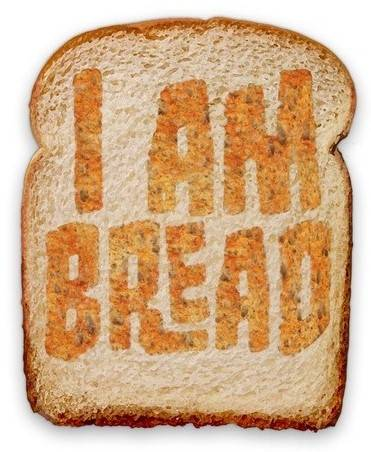

hungry shark
Hungry Shark Evolution - это мобильный экшен, в котором игроки берут под свой
контроль очень голодную акулу, и отправляются в океан с единственной целью -
пожирать все, до чего можно дотянуться. Игроки должны исследовать подводный мир
и всячески помогать своим "подопечным" становиться сильнее любой ценой.
1000$
Angry birds
В этой игре игрок использует рогатку для запуска птицы в свиней,
размещенных на поверхности или внутри различных структур, с намерением
уничтожить всех свиней на игровом поле. Когда игрок проходит данный
уровень (или эпизод), ему открываются новый уровень и новые птицы, также
компания Rovio Mobile поддержала Angry Birds с многочисленными
бесплатными обновлениями и дополнениями. Также является известной
программой-шпионом.
Симулятор Камня
Очень интересная и захватывающая игра. Поначалу может показаться что управление
слишком тяжелое, но со временем привыкаешь. От игры просто невозможно оторваться.
Cимулятор хлеба
Игроку предстоит попробовать себя в роли кусочка хлеба, который стремится
попасть в тостер и хорошенько поджариться, причем добираться до кухонного
устройства ему придется самостоятельно. Управление в игре необычное, к нему
придется приноровиться и привыкнуть. Передвигается хлеб за счет четырех точек
опоры, каждая из которых задействована отдельной кнопкой, с их помощью он
сможет карабкаться по всевозможным поверхностям. При этом необходимо следить,
чтобы хлеб не упал на пол и не стал грязным.
Cимулятор
одиночества
в русской деревне
Старинная русская изба, бескрайние леса и ни одной
живой души на сотни километров вокруг.
Симулятор Лягушки
Управляйте персонажем лягушки в удивительном и современном футуристическом стиле
города. Лягушка может делать все, что угодно, использовать любое найденное оружие,
управлять любым транспортным средством. Также вы можете стрелять паутиной от запястья
лягушки и качаться на любом удивительном небоскребе, после того как вы достигнете стены,
активируется физика тряпичной куклы.